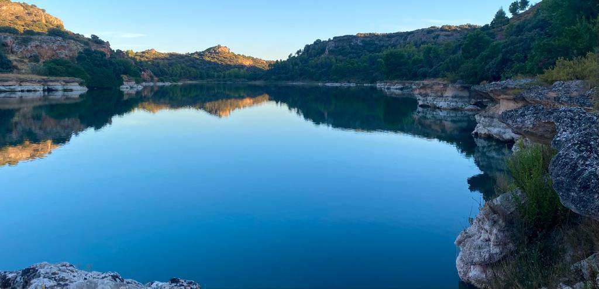

Declaradas como Parque Natural en 1979, Las Lagunas de Ruidera, es un paraje de gran belleza con singularidades paisajísticas y geológicas, localizado en Castilla La Mancha, en los límites de las provincias de Ciudad Real y Albacete.
Dada su extensión, cercana a 3.772 hectáreas, se puede conocer y disfrutar de este espacio natural de diversas formas, aunque si lo que se quiere es conocer bien el espacio natural se recomienda realizar, sin prisa, las diversas rutas senderistas y cicloturistas, o alguna de las rutas y visitas guiadas en vehículos 4x4 por el entorno del parque.
Los itinerarios senderistas se pueden realizar de forma libre, encontrándose en su mayoría debidamente señalizados. Si bien se aconseja realizar su recorrido acompañado por un guía, con el que conocer los valores naturales del lugar a visitar. Para recorrer a pie, en bicicleta el Parque Natural, existen varios itinerarios apropiadas para el senderismo. La visita guiada en vehículo 4x4, se realiza por el parque natural, acompañados por un guía-conductor, por las zonas menos conocidas del parque.
En el Parque Nacional además de encontrar multitud de senderos y rutas también hallará una diversidad de servicios, hoteles restaurantes, camping, zonas para el baño, zonas de pesca deportiva...
Le sugerimos qué actividades puede realizar en este entorno con el fin de disfrutar de la gran riqueza paisajística, faunística y botánica. En las actividades sugeridas a continuación, siga atentamente las recomendaciones de la visita y disfrutará de este espacio protegido.